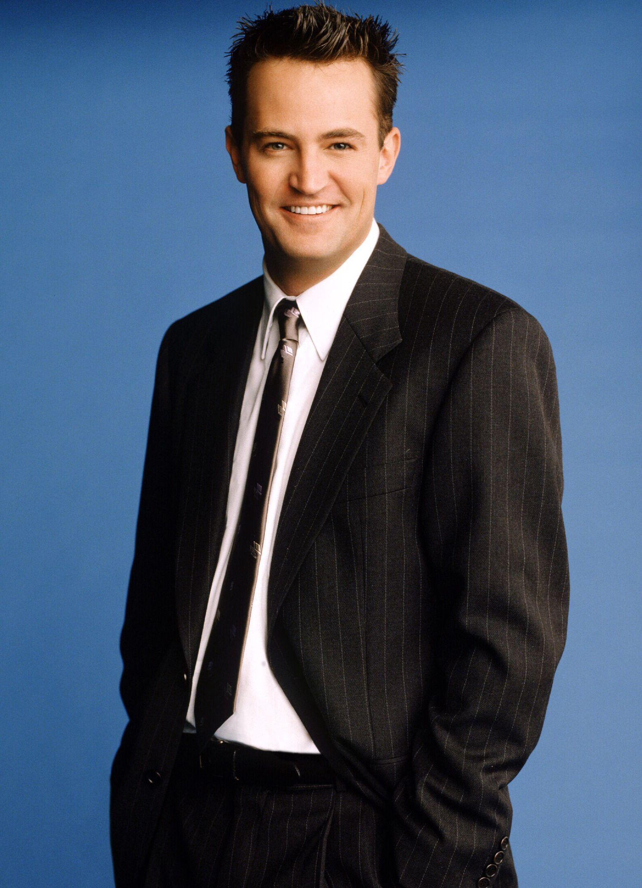

Chandler
Chandler Bing foi um processador de dados (emprego esse desconhecido pelos seus amigos) e odiava esse trabalho até que, na 9ª temporada, ele finalmente teve coragem de se demitir para trabalhar com publicidade (trabalho de que ele gostava de verdade). Ele é o mais cômico dos personagens, e conhecido por seu humor sarcástico.[5] É questionado sobre sua sexualidade e tem um pai travesti, o que aumenta ainda mais os rumores sobre sua sexualidade. Sua mãe é uma famosa escritora de romances adultos. Seu relacionamento mais longo, antes do casamento com Monica Geller, foi com a irritante Janice, eternamente conhecida pela velha e inconfundível frase: "Oh... my... God!". O namoro com Janice finalmente acabou na 3.ª temporada.[1]
